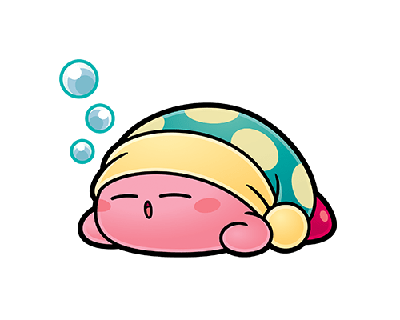

ピンク色でまんまるのプププランドの住人。
「コピー能力」が備わっていて、
敵を吸い込むことで、それに応じた能力を得ることができる。
ファイア、ソード、ビームなど種類は様々！ぜひ好きなコピー能力を探してみてね。
私が好きなのは、スリープカービィです。 カービィといったら、多くの人が「かわいい」と思うはず。
草原でまったりお昼寝していたり、ちょうちょを追っかけたり、のんびり釣りをしたり…かわいい要素がたくさん。
やはりかわいいのだが、彼(?)が各作品のボスに立ち向かう姿、
そして、仲間を守ろうとし、ポップスター(プププランドがある惑星)を救い出す…
そう、立派なヒーローなのです。
これだけではとてもおさまらないので、ぜひ調べてみていただきたい。